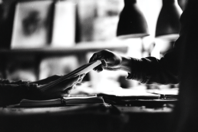
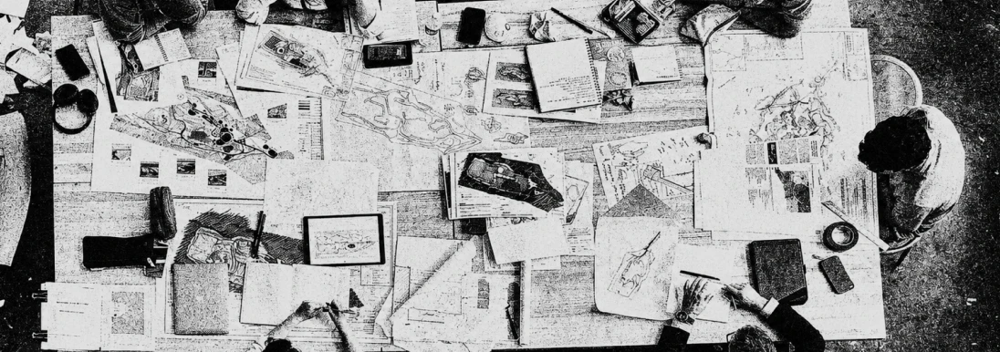
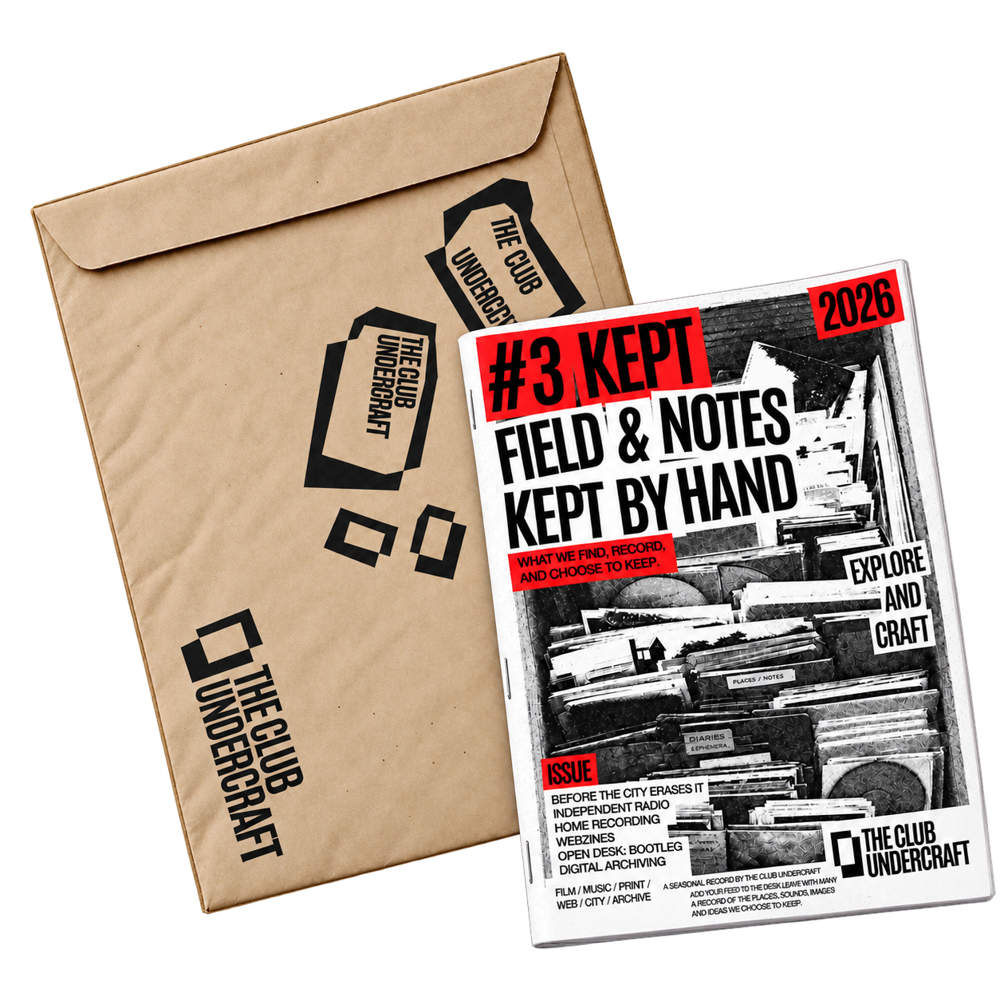
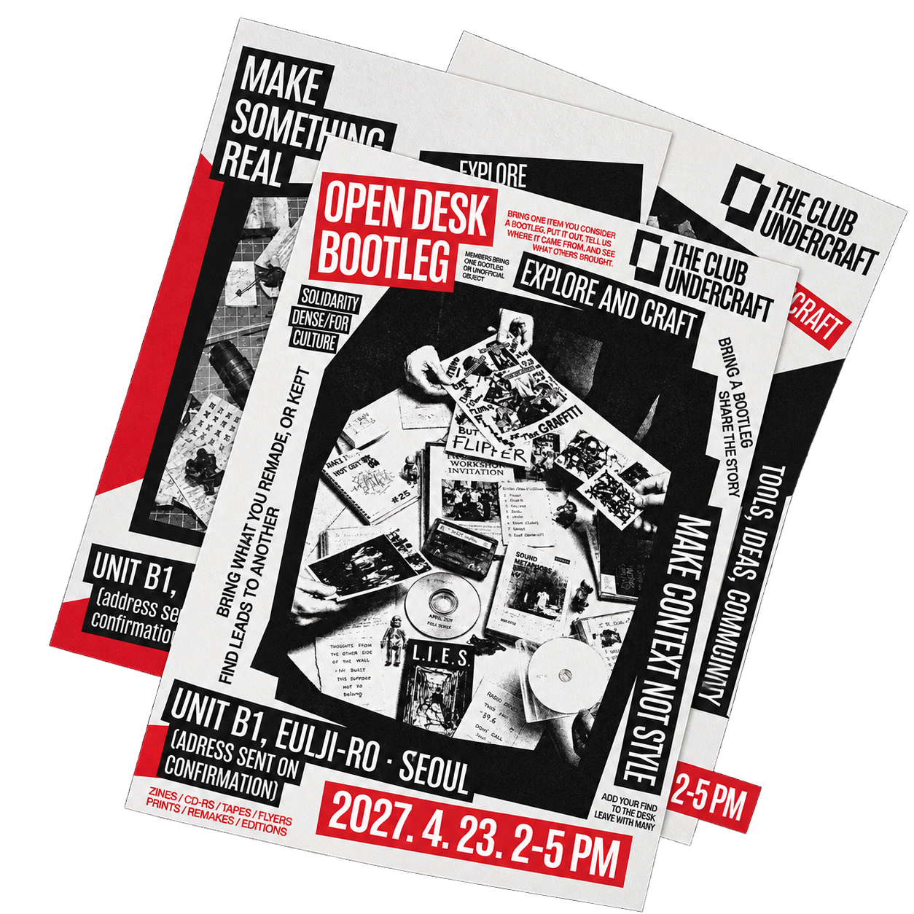
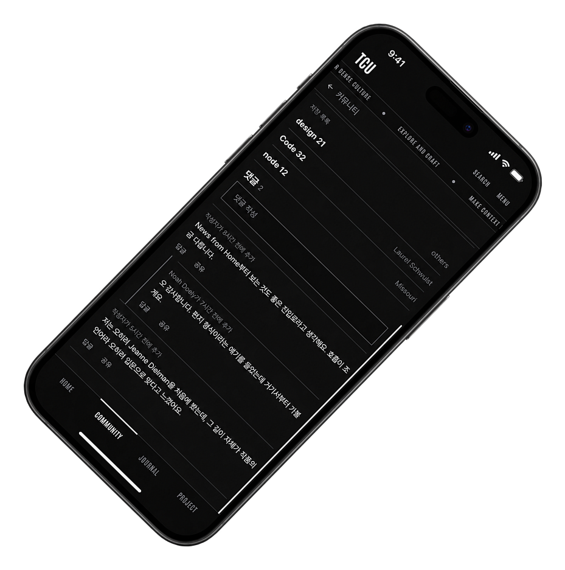
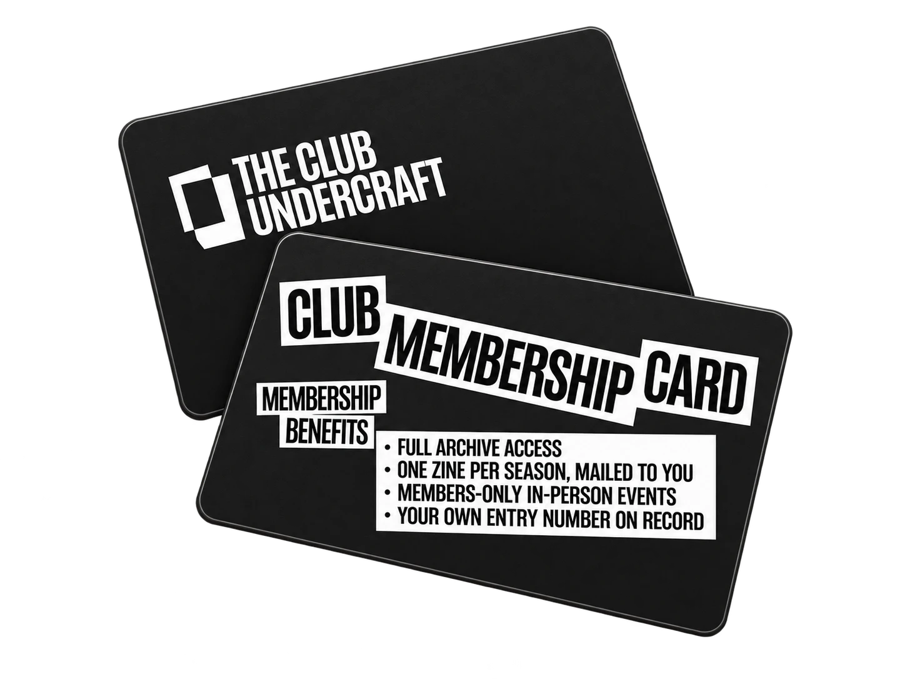
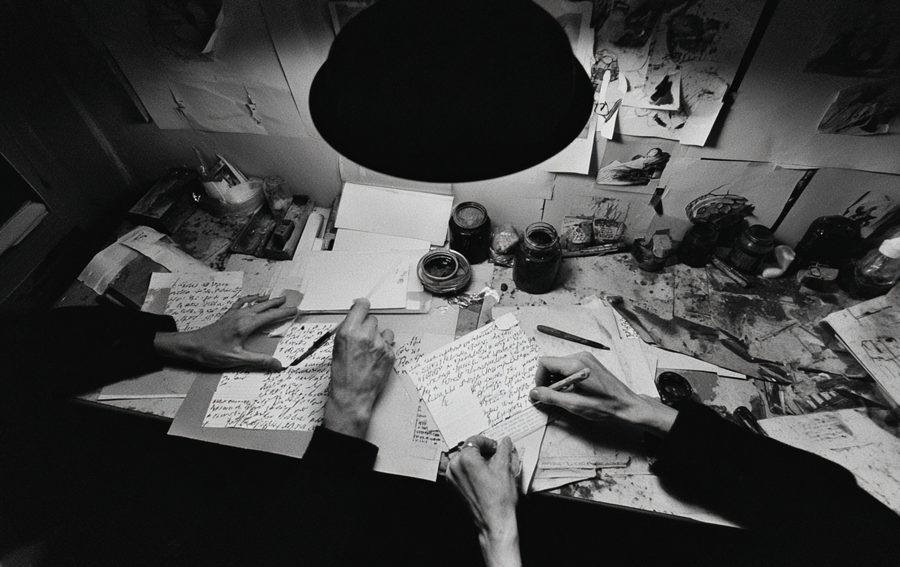
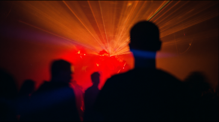
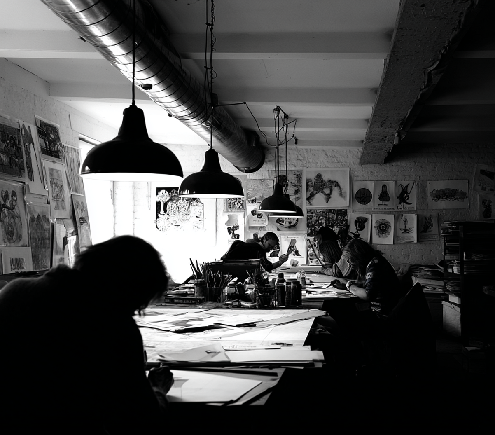

CRAFT NOTE
레퍼런스와 아이디어를 기록하고 오프라인 이벤트에서
사용할 수 있는 노트입니다.
A NOTEBOOK FOR RECORDING
REFERENCES AND IDEAS, DESIGNED
FOR USE AT OFFLINE EVENTS.

A POST-SUBCULTURE SOCIAL CLUB
FOR PEOPLE WHO FIND, SHARE
AND MAKE THINGS TOGETHER.
다양한 문화를 직접 만들고 축적하고 공유하는
포스트 서브컬쳐 소셜 클럽입니다.

THE CLUB UNDERCRAFT
취향과 문화를 깊이 있게 탐구하고 이를 바탕으로 새로운 문화를 창작하는 클럽입니다. 우리는 능동적으로 문화를 발굴하고, 우리만의 맥락으로 재조립하는 자들을 위해 존재합니다.우리는 단단한 결속을 중요하게 생각합니다. 따라서 자신만의 뚜렷한 시각을 제시하고, 능동적으로 문화를 엮어내며, 멤버 간의 협업에 열린 태도를 가진 분들만 제한적으로 수용하고 있습니다.
WE ARE A CLUB THAT EXPLORES TASTE AND CULTURE IN DEPTH, AND CREATES NEW CULTURE FROM WHAT WE FIND. WE EXIST FOR THOSE WHO ACTIVELY UNEARTH CULTURE AND REASSEMBLE IT IN THEIR OWN CONTEXT. WE VALUE SOLID SOLIDARITY — THAT’S WHY WE ADMIT, IN LIMITED NUMBERS, ONLY THOSE WHO PRESENT A DISTINCT POINT OF VIEW, ACTIVELY WEAVE CULTURE TOGETHER, AND STAY OPEN TO COLLABORATING WITH OTHER MEMBERS.
MEMBERSHIP
5
BENEFITS
INCLUDE
BRING IT IN. MAKE SOMETHING
TOGETHER.
DISCOVER, RECORD, MEET, AND
MAKE. MEMBERSHIP GIVES YOU
ACCESS TO A RANGE OF ONLINE
AND OFFLINE ACTIVITIES WITHIN
THE CLUB.
MEMBERSHIP IS APPLICATION-BASED. WE KEEP THE
CLUB SMALL SO MEMBERS CAN TAKE PART IN THE
ARCHIVE, EVENTS AND SEASONAL PROJECTS—NOT
SIMPLY FOLLOW THEM FROM OUTSIDE.
발견하고, 기록하고, 만나고, 만들어보세요.
멤버십을 통해 클럽의 다양한 온·오프라인
활동에 참여할 수 있습니다.
레퍼런스와 아이디어를 기록하고 오프라인 이벤트에서
사용할 수 있는 노트입니다.
A NOTEBOOK FOR RECORDING
REFERENCES AND IDEAS, DESIGNED
FOR USE AT OFFLINE EVENTS.

클럽의 비전과 룰, 문화에 관한 정보와 클럽 멤버의
창작 활동에 대한 정보가 있는 매거진입니다.
A MAGAZINE FEATURING THE
CLUB’S VISION, RULES, CULTURAL
INTERESTS, AND CREATIVE WORK
BY ITS MEMBERS.

시즌별 주제를 바탕으로 멤버들이 만나 문화를 공유하고
대화하는 오프라인 프로그램입니다.
AN OFFLINE PROGRAM WHERE
MEMBERS MEET, SHARE
CULTURE, AND TALK AROUND
A SEASONAL THEME.

정보를 공유하고 멤버들이 자유롭게 소통하는
온라인 커뮤니티입니다.
AN ONLINE COMMUNITY WHERE
MEMBERS SHARE INFORMATION
AND COMMUNICATE FREELY.

멤버십 인증과 클럽 활동에 사용하는 회원 카드입니다.
A MEMBERSHIP CARD USED FOR MEMBER
IDENTIFICATION AND CLUB ACTIVITIES.
SHARE WHAT YOU FIND,
SEE WHERE IT GOES.
BRING WHAT YOU HAVE.
LEAVE WITH SOMETHING NEW.
ONE FIND LEADS TO ANOTHER.
JOIN THE CLUB MEMBER
WE EXPLORE TASTE AND CULTURE, THEN BUILD SOMETHING NEW FROM WHAT WE FIND. WE EXIST FOR PEOPLE WHO ACTIVELY UNCOVER CULTURE ON THEIR OWN TERMS AND REASSEMBLE IT INTO THEIR OWN CONTEXT.

